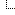

|
All Forums  Категория Visio |
|
|
||||||||||||
| Данный сайт является архивом форума visio.artberg.ru, который был закрыт в связи с переходом на новую платформу visio.getbb.ru Все материалы доступны только для чтения! Если у вас появились вопросы, или вы хотите что-то обсудить, связанное с Visio, обращайтесь на новый форум! Архив был создан благодаря совместным усилиям Генадия Туманова @Tumanov (visio.artberg.ru), Александра ака @Surrogate (visio.getbb.ru), и Николая Белых @nbelyh (unmanagedvisio.com) |